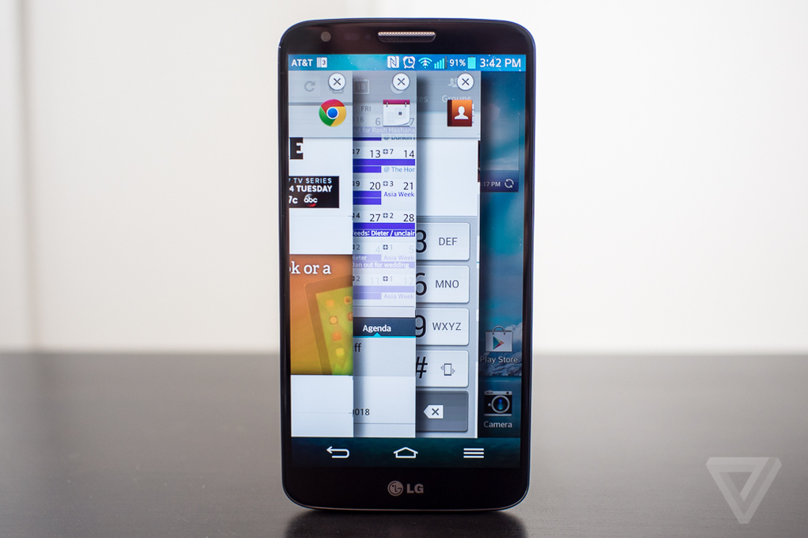
LG G2 review
| Home | History Of smartphones | Reviews | Best cameraphones | Best smartphones of 2013 |
Nokia Lumia 1020 review
The cameraphone to end all camerphones.
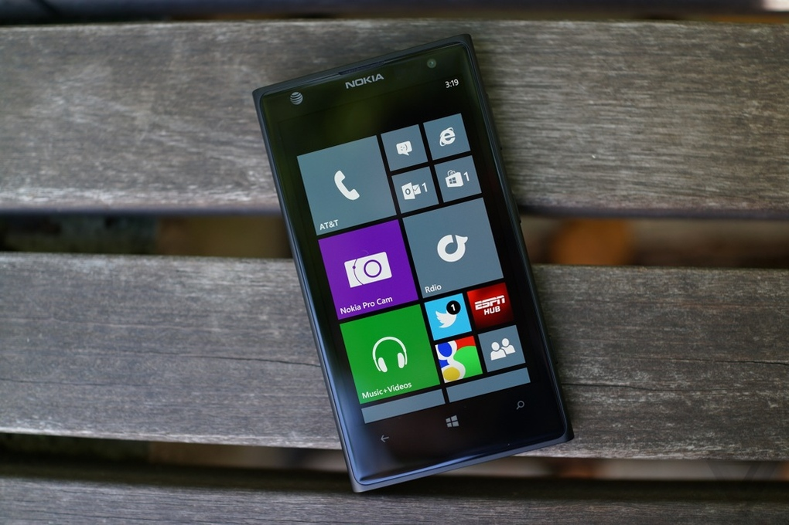
The last time Nokia made an incredible cameraphone, it neglected the phone. 2011’s 808 PureView, had a 41-megapixel camera, but strapped it to a Symbian Belle-powered cellphone that would’ve barely been great in 2009. This time it’s different: from the first moment I picked up the Lumia 1020, swiped through the Windows Phone 8 interface and booted up the camera, it felt like the future.
The phone
In the future, phones are apparently humungous.
By sheer coincidence, the Lumia 1020 arrived on my desk about 12 hours after the Lumia 925. The comparison is damning: the 925 is the slimmest, sleekest Lumia yet, while the Lumia 1020 is a tank. At 10.4mm thick it’s slightly thinner than the Lumia 920, but that’s like winning a "skinniest sumo wrestler" contest.
It's the Lumia 920 with a booty
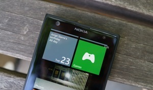
That number doesn’t account for the camera lens, either, which juts out of the back like an alien trying to burst through and escape. It props the phone up at a slight angle, so that it can never rest flat on a table – the round hump is also right where my finger wants to go when I hold the phone, which makes using the phone a little awkward.
With edges slightly more aggressively tapered than the 920, the 1020 feels like a manageable size, though switching back and forth with an iPhone is almost comical. It’s well-made, of the same unibody polycarbonate that I’ve seen on so many Lumia devices — but it unabashedly reverses the slimming of the Lumia 925. This phone is fat and proud of it.
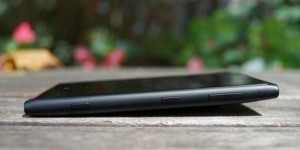
In many ways, the 1020 is just the 920 plus that fat camera lens. Power, volume, and shutter buttons sit on the right edge; there’s a SIM slot and headphone jack on top; and a Micro USB charging port on the bottom next to the impressively loud and clear speaker. The layout takes some getting used to — I kept turning the phone off while trying to turn the volume down — but it works.
The Lumia layout takes some
getting used to, but it works
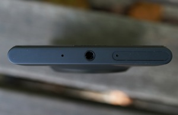
The AMOLED display, 1280 x 768 in resolution and 4.5 inches in size, is lifted straight from the Lumia 925 and 928. It’s not as big or as high-res as the current spate of flagship Android phones, but It’s crisp and accurate as long as you’re looking at the display head-on – whites turn a bit dim and gray as you get off-axis, but it’s not much of a problem.
It’s the result of Nokia’s ClearBlack display technology, which makes the screen viewable outdoors and usable with gloves on. That’s worth slightly-off whites any day of the week, though.
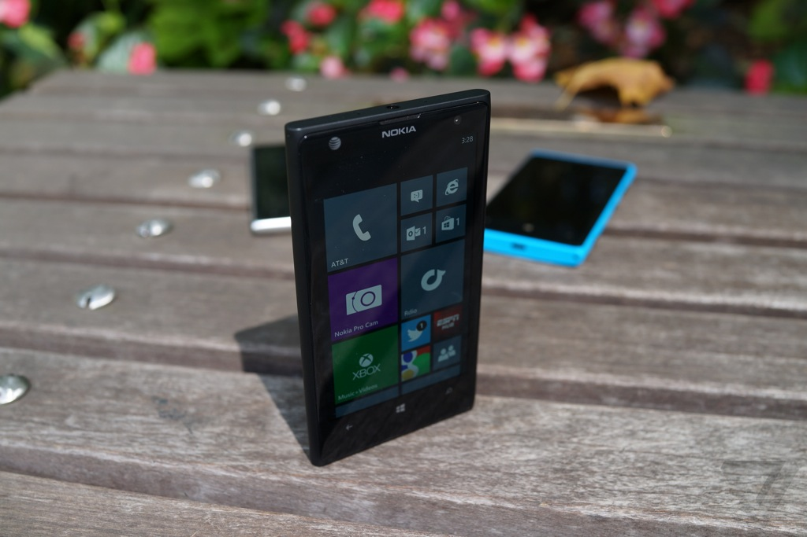
The camera
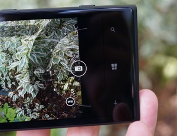
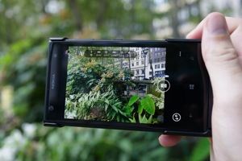
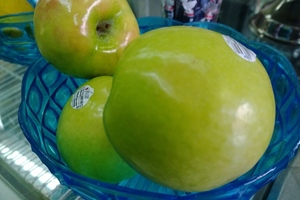
Although nearly everything else about the 1020 is newer and better than the 808, Nokia didn’t touch the ridiculous camera much. Thanks to a huge 1/1.5-inch sensor, the 1020 takes better pictures than any phone I’ve ever used (including the 808), and is better in most conditions than just about any $299 point-and-shoot camera. From the remarkable dynamic range to the astonishing clarity, it’s just a phenomenal camera. I spent a long time looking at photos for imperfections, only to find that most photos had none. I don’t know how Nokia does it, or how no one else has figured out what Nokia is doing, but clearly there’s some kind of magic happening in Finland.
Change is overrated
The Lumia has a 41-megapixel sensor, but because of the physics of square sensors and round lenses, you’re limited to 34- or 38-megapixel shots depending on your settings. (I use "limited" in the loosest of ways.) The pictures you’ll mostly see, save, and share are even smaller, at five megapixels. Each pixel in the final image is determined by oversampling the seven pixels around it; Nokia calls the result a "super pixel." (Superpixels are of course not to be confused with HTC’s Ultrapixels, which are a different kind of overbranded silliness.) Either way, in the end, Nokia’s oversampled images give you the accuracy of a 41-megapixel image in the frame (and file size) of a much smaller shot. It obviously works, too — at normal sizes for Facebook or Flickr, images looked the same huge or small.
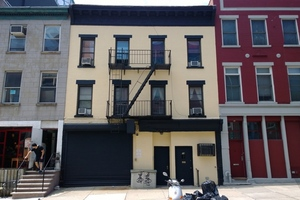
Shooting with so many megapixels has another benefit, too: a hugely powerful 6x digital zoom. Normally digital zoom is something to run far away from, because all you’re doing is cropping a photo and losing lots of data along the way, but here there’s plenty of data to go around. Thanks to really solid image stabilization, photos tend to be clear no matter how far you zoom. "Shoot first," CEO Stephen Elop said at the 1020’s launch event, "zoom later." He’s right: I took dozens of shots with the Lumia 1020 while much too far away from my subject, and then zoomed in later to get the exact shot I wanted.
There’s even a handy tool for zooming and re-framing your photos in Nokia’s Pro Cam app, which will then let you save the cropped photo next to the full one.
One huge photo becomes many small photos, which is a great system for taking pictures. Pro Cam governs every advanced setting and feature of the 1020’s camera — it’s one of the best such apps I’ve ever used. It better be, too, because if you shoot in any other camera app (including the stock Windows Phone Camera app) you lose almost every feature the 1020 offers and are limited to 5-megapixel shots.
Changing settings in Pro Cam is easy and offers immediate feedback — tap on White Balance and scrub through the semicircle of options to see exactly how it’ll look with a particular setting. It’s really useful, but could stand to be a little bit faster: the camera can occasionally lag for a moment while it re-renders the frame with your new settings.
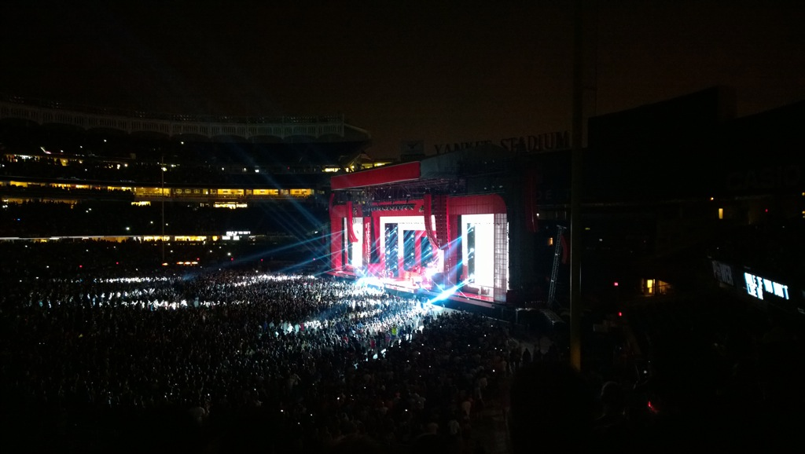
The lag is most obvious when you’re unlocking the Lumia 1020 straight to the camera app, which takes about five seconds of holding the shutter button before you’re ready to take a picture. The iPhone can be ready to fire in about half that time, and I definitely missed shots waiting for the "Resuming…" animation to disappear. Booting’s not the only thing that’s slow, either: the 1020’s autofocus bounces into position a half-beat slower than it should, and has to restart its search every single time you press the shutter button. Luckily the button itself has been improved, so half-pressing to focus is much easier — I took fewer accidental shots, and didn’t have to start over as often either.
The optional $79 Camera Grip adds an even better button, a grip, a tripod mount, and a secondary battery. With the grip on, I could easily use the 1020 in one hand, and the whole kit basically feels like a huge point-and-shoot or a small mirrorless cam. It’s big and bulky, but for the serious 1020 photographer it’s a must-have accessory. I used it much more than I expected to.
Serious photographers are going to want the Camera Grip
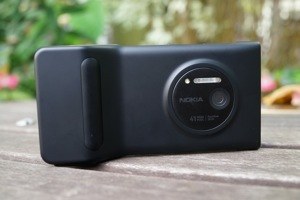
Video recording, available in 1080p, benefits three new features and improvements. One is the oversampling, which makes colors really vibrant and accurate. The second is image stabilization, which is also available with still shots — even as you walk or your body sways, the camera stays still. The third, a new microphone, is the biggest improvement over other Lumias. The new mic picked up clean, audible sound at a very loud concert, did a great job of cancelling subway sound while I shot videos on the way to and from the show. The 1020’s video isn’t quite the leap over its competition that its still shots are, but amateur YouTubers will be more than satisfied.
Like any good digital camera (or Nokia’s own Lumia 928), the 1020 has a Xenon flash. Instead of using an LED, which just turns on to light your subject and off when it’s done, the 1020 actually flashes. That means less blindness for your subjects, and a more even, more synchronized photo for you. It also helps reduce motion blur in the dark, since the camera only fires during the instant the flash is lit.
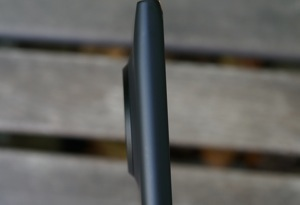
It’s a good thing the flash works, too, because low-light photography is the one place where no cameraphone can measure up to even a mid-range point-and-shoot. The 1020’s clear directive is to take the brightest shot possible, which requires a huge amount of in-camera processing — everything becomes noisy, muddy, and soft. It’s very sensitive, able to see images even my eyes couldn’t without the flash, but I almost never captured a nighttime photo without the flash that I wanted to keep.
But don’t let that dissuade you: this is by leaps and bounds the best cameraphone ever made. It’s more flexible than the Lumia 920, more impressive than the iPhone 5, even more accurate and vibrant than the 808 PureView.
If the camera is your primary feature request in a cellphone, I’d love to say look no further than the Lumia 1020. The camera certainly deserves the accolades. But I can’t say that — not yet, anyway.
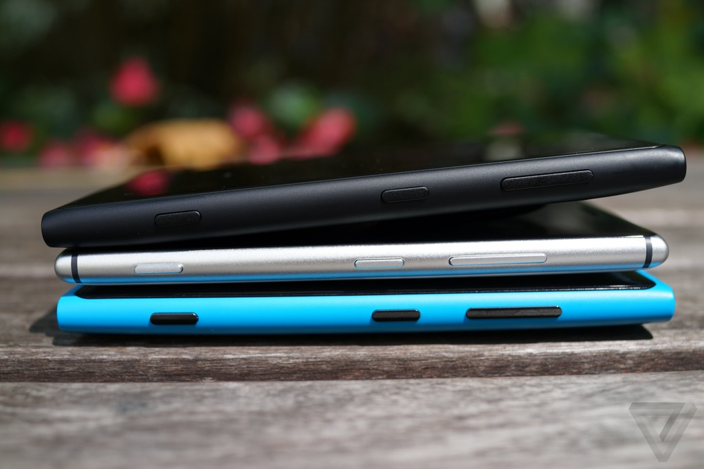
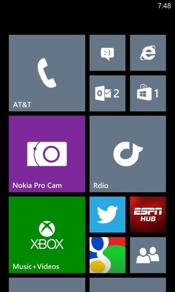
First-place camera,
third-place software
Taking pictures of a concert is hard with any camera, especially when you’re shooting from section 209. But I think it was during "H to the Izzo" that I snapped the best photo I’ve ever taken with a phone at a concert. It’s perfect: the lights are frozen in place, everything’s perfectly lit and in focus, and the crowd is roaring its approval at Jay Z. I needed to show this to some people.
That’s when I had a bit of a crisis. I wanted to put it on Instagram, except there’s no client; there are only third-party apps of varying quality and trustworthiness. (The best of them is Instance, which costs $1.49 and doesn’t support video uploads.)
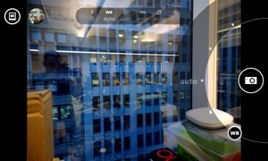
There’s no Snapchat, either. Or Google+, which is my favorite way of uploading full-res images, and really, half the fun of taking 34-megapixel images is showing people your 34-megapixel images.
Taking great pictures is only part of the equation
You can retouch images using the cool Creative Studio app, and use Nokia’s lenses to take a panorama or an animated GIF. But your sharing options are way too limited — the apps photo enthusiasts want most are by and large just not available. Flickr’s one of only a few exceptions, and even its app is woefully outdated: the splash screen says "Flickr for Windows Phone 7."
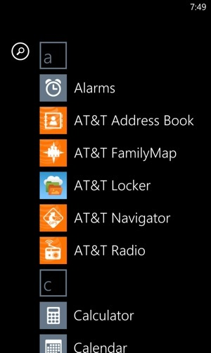
Even when you do find an app that works (and there are decent third-party alternatives for many services, if you look hard enough), you’re still only dealing with the five-megapixel images. Full-res shots live only within Nokia Pro Cam, and are only accessible by physically plugging your phone into your computer. The logic is simple enough — the 34-megapixel shots weigh in at roughly 10MB apiece, which will eat through your data allotment in a hurry — but there should at least be a way to upload them on Wi-Fi, or with plenty of warning that your data cap is going up in flames.
Using the Lumia 1020 reminded me of why I got rid of my digital camera. I don’t want my pictures on my computer or on an SD card, I want them out in the world — and I don’t want to have to sit at my computer, days later, and process everything I shoot before it goes out. I’ve taken and shared thousands of pictures from my iPhone without ever once connecting it to my computer; any other way just feels antiquated.
If you make me use my PC to share pictures
from my phone, you blew it
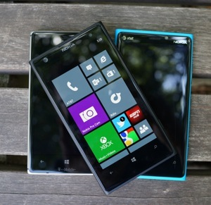
There’s hope that the ecosystem might catch up, because outside of my photo needs more and more of the apps I use are at least functional on Windows Phone 8. 4th and Mayor is a really good Foursquare app, Evernote, Facebook, and Twitter all finally have solid first-party clients, Rdio is bad but at least exists, and Pouch is a really nice Pocket client. Of course, many of these apps still lag their iOS and Android counterparts, and Windows Phone is still very much a distant third place ecosystem, but there are encouraging signs of progress. Hopefully Flickr or 500px is watching.
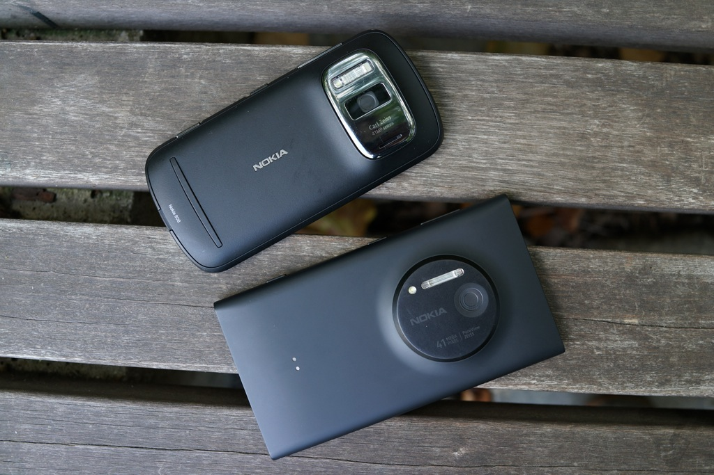
I’m still so reliant on Google services both personally and professionally that Windows Phone remains something of a non-starter. But if I could do it all over again, I might choose Microsoft — the Outlook / Office / SkyDrive trio is seriously compelling, and in that universe Windows Phone 8 is a neatly integrated, useful tool. It just really, really needs more great third-party apps, and fewer cheap forgeries.
Performance is never an issue for Windows Phone 8
Everything that it can do, the Lumia 1020 does pretty well. It’s powered by a Qualcomm Snapdragon S4 chip clocked at 1.5GHz, along with 2GB of RAM, but one of Windows Phone 8’s great strengths is that it doesn’t need superlative hardware to run well. Indeed the 1020 is impressively smooth and fast — apps open and switch quickly, scrolling and swiping are buttery, and only the Pro Cam app ever caused the phone to lag or crash. Pro Cam only crashed once, but it made it count: the app crashed, then froze the phone so badly it wouldn’t even turn off. A soft reset solved the problem, and it hasn’t yet happened again, but it was a doozy. Pro Cam appears on be on the edge of what this phone can handle, which makes me nervous about the games and apps I wish would come to the platform.
Without a bleeding-edge processor, the Lumia 1020 gets impressive battery life. I had no trouble getting a full day of use, and often a day and a half as long as I wasn’t taking too many pictures — when you’re shooting hundreds of photos at a go, the phone gets warm and its battery wanes pretty quickly. But in more normal use, expect about a day and a half from your phone — two with the Camera Grip’s help.
Wrap-up
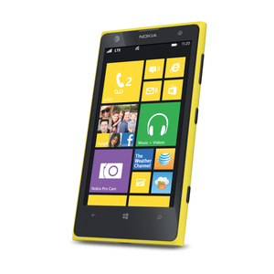
- Spectacular camera Big and awkward
- Great battery life Photography ecosystem is weak
- Solid performance Hard to get at full-size photos
Nokia Lumia 1020
GOOD STUFF BAD STUFF
A Remarkable Phone,
Hampered By Its Operating System
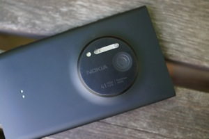
After a long period of resetting with Windows Phone, Nokia’s getting good, and fast. The 1020 is one of its best devices yet, and certainly the easiest to sell — if you really love cameras, you’ll really love the Lumia 1020. But a great camera wasn’t enough to sustain the 808 PureView, and even though Windows Phone 8 is a huge leap forward from Symbian it’s still a long way behind. There are plenty of compelling Windows Phone 8 options, from the gorgeous 925 to the feature-packed 1020, but they can’t change the fact that Windows Phone 8 itself just isn’t that compelling.
Throughout my entire time with the device, I kept coming back to Stephen Elop. He told the Guardian that Nokia picked Windows Phone because it feared Samsung would come to dominate the Android market, and that Nokia wouldn’t be able to compete. I disagree. The 1020, plus all the sharing options and apps that Google’s OS brings, could be a ridiculously compelling phone. I’d happily carry a big phone that gave me a perfect camera, but right now with the 1020 I’m carrying a big phone running a third-place OS just for the imaging prowess. For Nokia’s sake, I hope Windows Phone 8 gets the apps it needs before HTC, Apple, or Samsung wakes up and builds a killer cameraphone to go with a killer ecosystem. But either way, I hope it happens soon – I hear Justin Timberlake’s coming back to New York this fall.